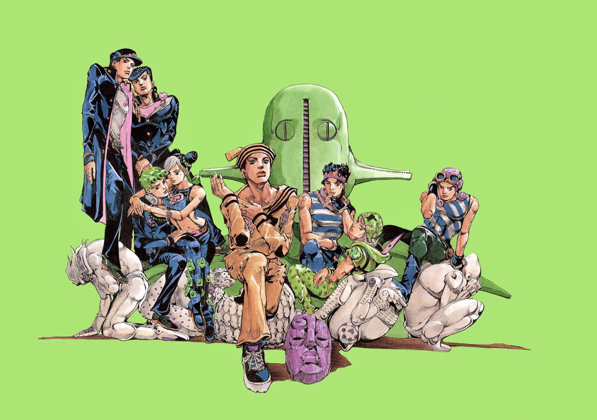
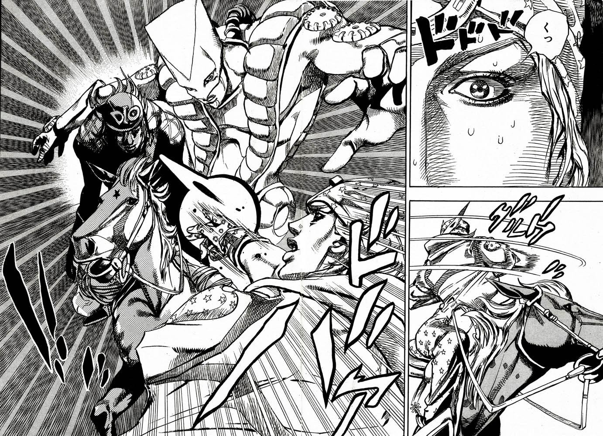
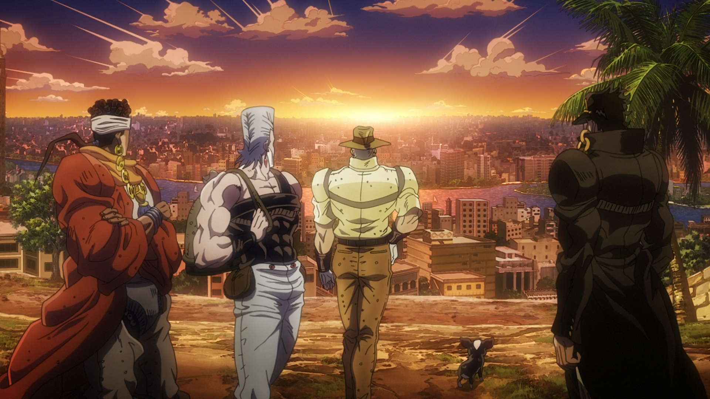
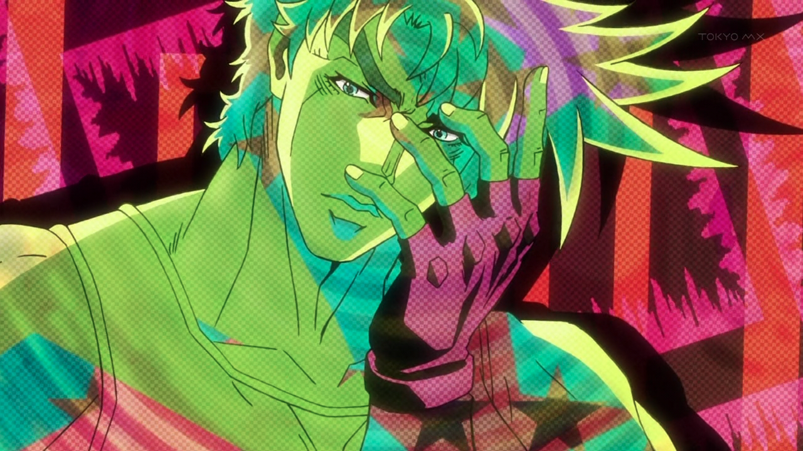

Hirohiko Araki is a renowned Japanese manga artist, best known for creating the long-running series "JoJo's Bizarre Adventure." Born on June 7, 1960, in Sendai, Japan, Araki has been active in the manga industry since the early 1980s. His work is characterized by its unique art style, imaginative storytelling, and complex characters. "JoJo's Bizarre Adventure" has been serialized in Weekly Shōnen Jump since 1987 and has spawned numerous adaptations, including anime series, video games, and merchandise. Araki's influence extends beyond manga, as his distinctive fashion sense and dynamic poses have left a lasting impact on pop culture.
   